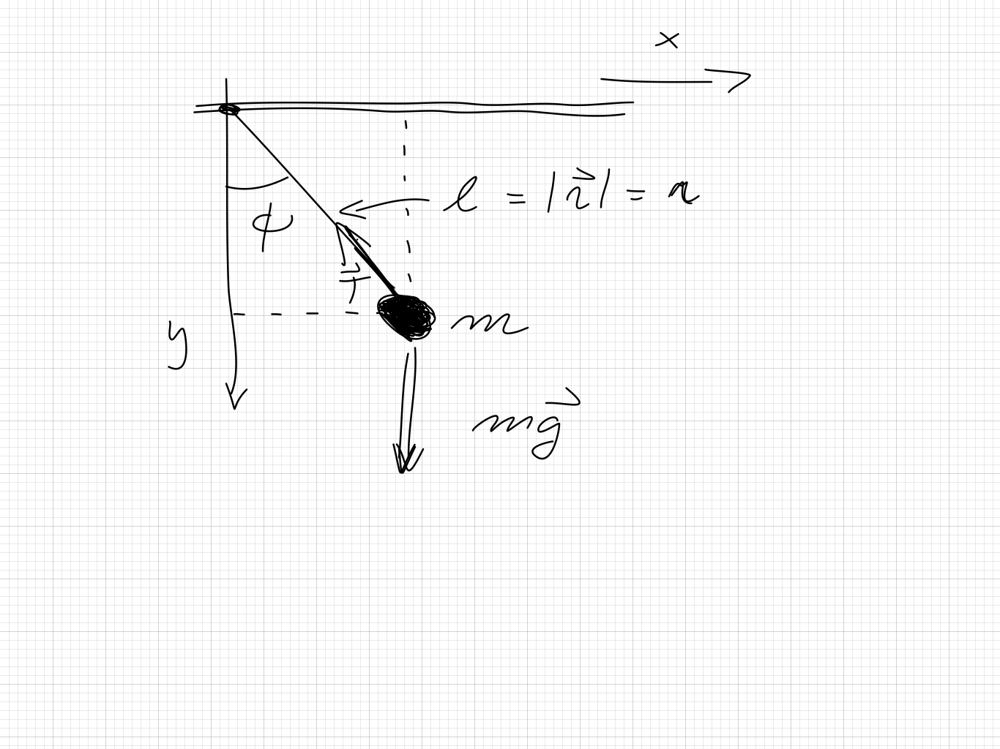

PHY321: Classical Mechanics 1
Apr 24, 2020
Practicalities about homeworks and projects
- You can work in groups (optimal groups are often 2-3 people) or by yourself. If you work as a group you can hand in one answer only if you wish. Remember to write your name(s)!
- How do I(we) hand in? Due to the extraordinary situation we are in now, the final projec should be handed in fully via D2L. You can scan your handwritten notes and upload to D2L or you can hand in everyhting (if you are ok with typing mathematical formulae using say Latex) as a jupyter notebook at D2L. The numerical part should always be handed in as a jupyter notebook.
Introduction to the final project, total score: 100 points
The relevant reading background is
- chapters 2-9 and 14 of Taylor
- lecture notes throughout the semester and previous homework and midterm projects.
The final project aims at covering most of the topics we have discussed during the semester. As a physical system to discuss many of the principles we have discussed during the semester, we will use what in the literature is called the mathematical pendulum and variants thereof.
Exercise 1: Mathematical pendulum
A mathematical pendulum consists of a point mass \( m \) suspended by a massless thread/rod of length \( l \) in a gravitational field, as shown in the figure here. The constraining force is labeled by \( \boldsymbol{T} \) and the gravitational force is labeled \( \boldsymbol{F}_g \).

We assume that the length \( l \) is constant and we define the coordinates involved as
$$
\boldsymbol{r} = l\sin(\phi)\boldsymbol{\hat{x}}+l\cos(\phi)\boldsymbol{\hat{y}},
$$
where \( \boldsymbol{\hat{x}} \) and \( \boldsymbol{\hat{y}} \) are the unit vectors in the \( x \) and \( y \) directions, respectively.
- 1a (10pt): Set up the forces acting on the system and show that the equation of motion is \( m\ddot{\boldsymbol{r}}=\boldsymbol{F}_g+\boldsymbol{T} \).
- 1b (10pt): Show that you can rewrite the above equation of motion as two independent equations of motion, one for \( \phi \) and one for the constraining force. Show that these equations are \( \ddot{\phi}(t)=-\omega_0^2\sin{(\phi(t))} \) with \( \omega_0^2=g/l \) and \( T=ml\dot{\phi}^2+mg\cos{(\phi)} \).
The equation for \( \phi \) is a second-order differential equation
$$
\ddot{\phi}(t)=-\omega_0^2\sin{(\phi(t))}.
$$
This equation can be solved analytically if we assume that the angle \( \phi \) is very small. Then we can approximate our equation as
$$
\ddot{\phi}(t)=-\omega_0^2\phi(t).
$$
- 1c (10pt): Find the analytical solution for the last equation. Hint, look back at the solutions for the simple harmonic oscillator problem in one dimension in for example homework 6.
For our numerical treatment of the full second-order differential equation, we can proceed as we have done before and split the second-order differential in two first-order differential equations as shown here
$$
\frac{d\dot{\phi}}{dt}=-\omega_0^2\sin{(\phi)}.
$$
and
$$
\frac{d\phi}{dt}=\dot{\phi}.
$$
- 1d (10pt): Scale the equations in terms of a dimensionless time \( \hat{t}=\omega_0t \). Choose between the Euler-Cromer, the Velocity-Verlet or the Runge-Kutta to fourth order and write down the algorithm for solving the last two equations numerically. Explain briefly your choice of numerical algorithm. Hint, look back at what you did in homework 6 and the two midterms.
- 1e (10pt): Choose initial conditions and compare your numerical solution with the analytical one. For which range of angles \( \phi \) (determined by your initial conditions) are the analytical solutions comparable to your numerical results? Discuss the implications of your results.
- 1f (10pt): Find the expressions for the kinetic and potential energies in terms of the variables \( r \) and \( \phi \). Remember that \( r=l \) and is a constant throughout the calculations. In your code, check then whether energy is conserved by calculating the total energy, the kinetic and potential energies ad functions of time. Discuss your results.
- 1g (10pt): With the potential \( V \) and kinetic \( T \) energies, define the Lagrangian for the mathematical pendulum discussed here. Add the constraint \( r=l \) via a Lagrange multiplier \( \lambda \) and derive the equations of motion. Show that these result in \( \ddot{\phi}(t)=-\omega_0^2\sin{(\phi(t))} \) with \( \omega_0^2=g/l \) and \( \lambda=ml\dot{\phi}^2+mg\cos{(\phi)} \). How would you interpret \( \lambda \)?
Exercise 2: Rotating Pendulum in a Gravitational Field
Assume now that the same pendulum is rotating in the gravitational field with a constant angular velocity \( \Omega \) as shown in the figure here, with a constant angle \( \phi \).

From our discussions on rotating frames, the acceleration for an object in the rotating fram \( S \) is given by
$$
m\boldsymbol{a}_{S}=\boldsymbol{F}+m\boldsymbol{r}\times\dot{\boldsymbol{\Omega}}+2m\boldsymbol{v}_S\times\boldsymbol{\Omega}+m(\boldsymbol{\Omega}\times\boldsymbol{r}_s)\times\boldsymbol{\Omega}.
$$
The position the mass of the pendulum is \( \boldsymbol{r}_S \). Recall also that the length \( l \) is constant.
We have the Coriolis force
$$
\boldsymbol{F}_{\mathrm{Coriolis}}=2m\boldsymbol{v}_S\times\boldsymbol{\Omega},
$$
while the last term is the standard centrifugal force
$$
\boldsymbol{F}_{\mathrm{Centrifugal}}=m\left(\boldsymbol{\Omega}\times\boldsymbol{r}_S\right)\times\boldsymbol{\Omega}.
$$
In this exercise we will assume that the angular acceleration of the rotating frame and the position \( \boldsymbol{r}_S \) are constant quantities, that is their time derivatives are zero. Moreover, we assume the angle \( \phi \) does not change as function of time.
- 2a (10pt): Set up the forces acting on the mass and show that, since \( \Omega \) is constant
$$
m\boldsymbol{a}_{S}=0=\boldsymbol{T}+m\boldsymbol{g}+m(\boldsymbol{\Omega}\times\boldsymbol{r}_S)\times\boldsymbol{\Omega}.
$$
Discuss why you don't include the Coriolis term and only the centrifugal force.
- 2b (10pt): Use the last equation to show that, for \( \Omega^2 \lg g/l \) the angle \( \phi \) is given by
$$
\phi=\mathrm{arccos}\left(\frac{g}{l\Omega^2}\right).
$$
- 2c (10pt): Plot \( \phi \) as function of \( g/l\Omega^2 \) and study the limits \( \Omega\rightarrow \infty \) and \( \Omega\rightarrow 0 \). Discuss the possibility that \( \Omega^2 < g/l \). Discuss the implications of your results.